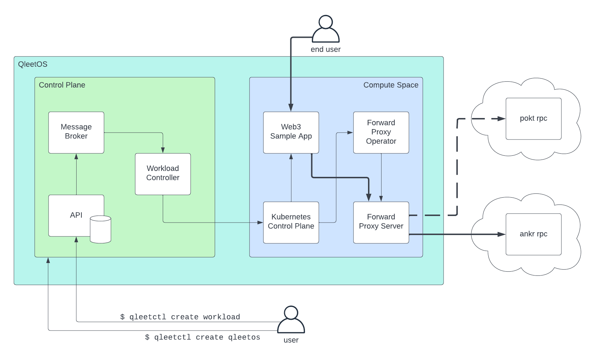

Getting Started¶
In this guide we'll install the qleetctl CLI tool on your local machine and then install the QleetOS control plane locally using qleetctl. Then we'll install a sample app using QleetOS.
Install qleetctl¶
You can install qleetctl using Homebrew or by downloading the binary release from Github.
Homebrew¶
Homebrew offers the simplest install for Mac and Linux and is the recommended install method:
1 2 | |
Binary Install¶
Currently, qleetctl requires that you have the following tools installed on your local machine. If you use Homebrew to install, these dependencies will be handled for you. Otherwise, ensure these tools are installed first:
Then install qleetctl:
1 2 3 | |
Usage info for qleetctl can be seen as follows:
1 | |
Install QleetOS¶
To install the QleetOS control plane locally:
1 | |
This will create a local kind Kubernetes cluster and install all of the control plane components. It will also register the same kind cluster as the default compute space cluster for tenant workloads.
To view the pods that constitute the QleetOS control plane:
1 | |
Note: Threeport is the name of the control plane. You can think of Threeport as the kernel and QleetOS as a distribution of the operating system.
The QleetOS API is now available at localhost:1323. Ensure that it is up and running by opening the Swagger API docs at: http://localhost:1323/swagger/index.html.
You can see the control plane components running locally as follows:
1 | |
Deploy A Workload¶
To deploy a workload using QleetOS, you minimally need to create two API objects:
a WorkloadDefinition and a WorkloadInstance. For this example, we're also
going to create a WorkloadServiceDependency to manage connections to the
blockchain. More on this shortly. We can create all three resources with a
single configuration file.
First, create a workspace on your local filesystem:
1 2 | |
Download a sample workload config as follows:
1 | |
You now have the workload config on your local filesystem. If you open the file you'll see it has a configuration for the three resources. Let's dig into what each of them represent:
Workload Definition¶
The WorkloadDefinition is what it sounds like: a definition for a workload
that can be deployed as many times as you like. It includes a field
YAMLDocument that refers to a file on your filesystem. Let's download that
file:
1 2 | |
That file contains Kubernetes manifest for four resources: a namespace,
configmap, deployment and service. Note that the configmap tells the sample app
to use http://forward-proxy.forward-proxy-system.svc.cluster.local for its
RPC endpoint. This URL uses a local DNS entry that will be set up by QleetOS as
defined by the Workload Service Dependency which we'll discuss more shortly.
Workload Instance¶
The WorkloadInstance refers to the workload definition and actually deploys
the instance of the workload. It also refers to the cluster which is set up as
the default when we created QleetOS above.
Workload Service Dependency¶
The Workload Service Dependency creates a method to manage services that are
accessed by your app over the network. When you create a workload service
dependency, QleetOS provisions a forward proxy. This forward proxy consists of
an Envoy proxy and a Kubernetes operator that configures Envoy to forward
traffic to a given destination. In this case, when the sample app calls the
proxy, Envoy will forward the request to rpc.ankr.com/eth which is a publicly
available RPC service provided by ankr.
We can now create the workload as follows:
1 | |
This command calls the the Qleet API to create those three Qleet objects. The API notifies the workload controller via the message broker. The workload controller processes the workload definition and creates the workload by calling the Kubernetes API. Also, since a workload service dependency was created, the workload controller deploys the forward proxy components and configures the Envoy proxy.
You can see the forward proxy components as follows:
1 | |
You should see a pair of pods for the forward-proxy-server deployment. These
are the Envoy proxy. Also, you should find a
forward-proxy-controller-manaager. This is the Kubernetes operator that
serves as a control plane for Envoy and configures it. It uses a ForwardProxy
custom resource that was created by the workload controller. You can see the
content of that resource with the following:
1 | |
Once the forward proxy is running and configured, the sample app can start and connect to its RPC endpoint. You can see that workload with:
1 | |
You can now see the sample by forwarding a local port to it with this command:
1 | |
Now visit the app here. It will display the balance of an Ethereum wallet by getting the information from the blockchain.
Update the Service Dependency¶
Next, let's update the service dependency. Download a new service dependency config:
1 | |
This config file contains a new publicly available RPC endpoint to gain access to the Ethereum blockchain. This one uses the POKT network.
Update the serviced dependency:
1 | |
This command changes the workload service dependency which prompts the workload controller to update the ForwardProxy config. This triggers the forward proxy operator to update the Envoy config. You can see the updated forward proxy as follows:
1 | |
If you try out the sample app again, you'll see it still can access the blockchain, but through a different provider. This service dependency is managed independently of the sample app. No restart, hot reload or config reload of any kind is required by the sample app. It remains using the RPC endpoint configured in its configmap and the Envoy proxy forwards the request to the correct destination on its behalf.
Summary¶
This diagram illustrates the relationships between components introduced in this guide.

When we installed QleetOS using qleetctl create qleetos we created a new
control plane on a local kind Kubernetes cluster.
When we installed the sample app using qleetctl create workload we called the
API to create the three workload objects: a definition, instance and service
dependency. The reconciliation for these objects was carried out by the
workload controller which created the necessary Kubernetes resources via the
Kubernetes control plane. We spun up the sample app itself as well as the
forward proxy components which manage connections to the Ethereum RPC providers
needed by the sample app.
When the end user queries the sample app for the balance of an Ethereum wallet, the sample app calls the forward proxy server which forwards the request to the destination configured by the QleetOS user.
Importantly, all dependencies are created in response to, and only when needed by, a tenant workload - the sample app in this case. In this way QleetOS is application-centric. It responds to app requirements and creates dependent services in response to those requirements, as opposed to most workload management systems that require infrastructure and support services to be installed ahead of time.
Clean Up¶
To uninstall the QleetOS control plane locally:
1 | |
Remove the test configs from you filesystem:
1 2 | |